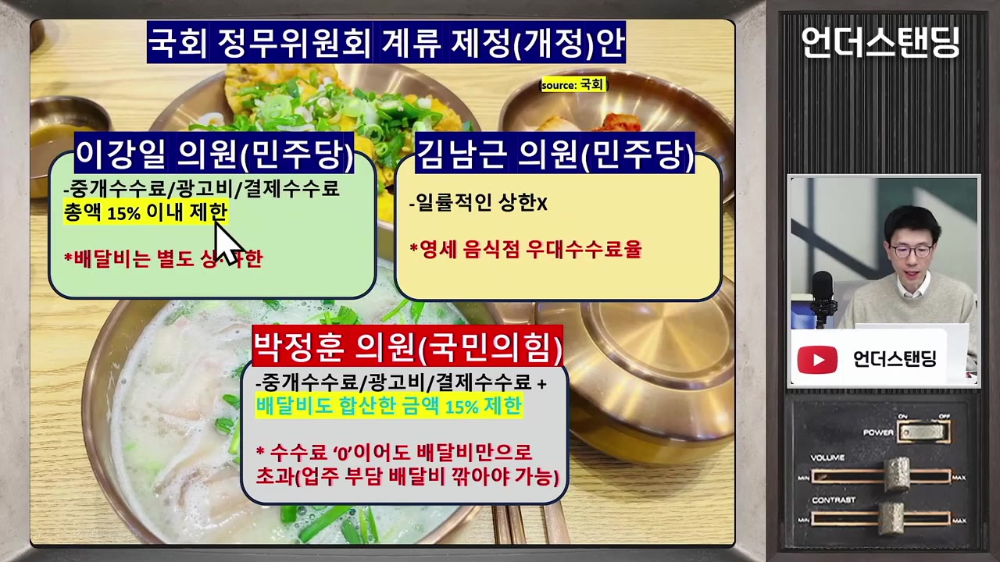

국밥 2만 원 팔면 6천 원 떼가는 배달앱....'15% 수수료 상한제' 도입하면 내 배달비가 높아진다? (언더스탠딩 백종훈 기자)
▶ 원본 영상 보기한눈에 보기
- 배달앱 수수료 상한제(15%)가 국회 정무위 법안소위에서 이달 말 논의될 예정이며, 여야 모두 공감대가 있는 분위기다.
- 2만 원 국밥 한 그릇을 배달로 팔면 중개수수료 7.8%·배달비 3,000원·광고비 약 1,688원·결제수수료 3%로 약 6,200원(30% 초반)이 플랫폼 관련 비용으로 나간다.
- 법안은 점주 부담만 제한하므로 플랫폼이 소비자 배달팁 인상이나 라이더 배달료 삭감으로 보전할 가능성이 높다는 것이 출연자들의 전망이다.
- 미국 14개 도시의 15% 상한제 연구에서는 소비자 부담이 약 4.69달러 늘고 사회적 후생이 8% 감소했으며, 점주 이익은 소폭 개선에 그쳤다.
- 출연자들은 일괄 상한보다 배민·쿠팡이츠 간 경쟁 촉진(수수료가 똑같이 수렴하는 '짬짬이' 의심)이 더 나은 해법이라는 쪽이다.
이런 분께 도움이 됩니다
- 배달앱 수수료 상한제 논란의 쟁점(점주·라이더·소비자)을 한 번에 파악하고 싶은 분
- 자영업자 수익 구조와 플랫폼 규제의 부작용 사례(미국)를 알고 싶은 분
핵심 내용
점주가 실제로 떼이는 돈
- 사례: 수도권 국밥집에서 2만 원 주문 시 플랫폼 관련 비용이 약 6,200원(30% 초반). (3:24, 5:00)
- 중개수수료 7.8% (약 1,560원) — 배민·쿠팡이츠가 거의 동일
- 점주 부담 배달비 약 3,000원 (최대 3,400원). 중개수수료와 합쳐 약 4,500원, 22% 이상
- 광고비 건당 1,688원 (약 8%). 안 쓰면 노출에서 밀려 경쟁적으로 쓸 수밖에 없는 구조
- 결제수수료 3%
- 여기서 재료비·인건비·임대료·공과금을 내야 해 마진이 박하다.
- 해외와 요율이 크게 다르지 않다: 미국 도어대시도 15~30%. 다만 미국은 외식비가 비싸 금액이 커 보일 뿐이다. (13:05)
- 소비자는 무료배달·할인으로 실제로는 약 1,000원만 내는 경우가 많다(영수증상 배달팁 2,900원에서 할인).
🔁 수수료율이 오른 과정
- 무료배달 경쟁
- 점주 수수료 인상
- 불만 폭발
- 상생요금제
- 1무료배달 경쟁
2024년 3월 쿠팡이츠가 소비자 무료배달을 시작하고, 한 달 만에 배민도 따라 했다.
- 2점주 수수료 인상
배민이 점주 수수료를 6.8%에서 9.8%로 올려 쿠팡이츠와 맞췄다.
- 3불만 폭발
소비자는 싸졌다고 느꼈지만 점주 부담은 눈덩이처럼 늘었다.
- 4상생요금제
2025년 9.8%에서 7.8%로 하향. 매출 구간별로 상위 7.8%, 중간 6.8%, 하위 20%는 2%.
💡 소비자 혜택(무료배달)의 비용을 점주가 부담해 온 구조다.
법안 내용과 일정
| 의원 | 내용 |
|---|---|
| 민주당 이강일 | 중개수수료·광고비·결제수수료 합산 15% 이내. 배달비는 별도이되 시행규칙으로 상·하한 설정 |
| 민주당 김남근 | 상한 대신 영세 음식점 우대 수수료 |
| 국민의힘 박정은 | 배달비까지 합산해 매출의 15% 초과 금지 (사례에서는 배달비만 15%라 사실상 운영 불가) |

- 15%의 근거는 불분명하다. 2021년 미국 상한제 도입 시 15%였던 숫자를 가져온 것으로 추정된다. (19:04)
- 여야 공감대가 있고 법안이 1년 넘게 계류돼 왔다. 점주 단체는 결집력이 있고 소비자는 무관심해 이번엔 추진될 분위기다.
예상되는 부작용
- 점주 비용만 제한하므로 플랫폼은 (1) 소비자 배달팁 인상 (2) 라이더 배달료 삭감으로 보전할 가능성이 높다. (21:38, 29:27)
- 소비자는 지금 할인으로 1,000원만 내지만, 상한제 후 2,900원 전액을 받을 수 있다.
- 라이더는 실수령이 건당 2,000원대 중반 이하라고 증언한다(플랫폼이 관리비를 뗌). 하청 소속은 1,000원대도 있다. (32:10)
- 라이더 보수가 낮으면 라이더가 줄어 배달 시간이 늘 수 있다.
- 소비자 부담이 늘면 주문이 줄어 점주 매출도 줄어든다.
- 라이더 보호를 위해 최저 건당 배달료 조항을 넣어 달라는 요구도 있다.
미국 사례
- 2021년 14개 도시(뉴욕·샌프란시스코 등)에서 15% 상한 도입, 이후 완화. 홍현우 충남대 교수 분석 인용: 소비자 부담 약 4.69달러(약 6,000원) 증가, 사회적 후생 8% 감소, 점주 이익 소폭 증가. (24:05)
- 샌프란시스코: 기본 배달·노출 15% 상한, 개인 자영업자만 적용(프랜차이즈 제외). 올해 10월에도 유지되나 부가서비스 요율은 예외라 구멍이 커지고 있다. (25:28)
- 뉴욕: 모든 음식점에 23% 상한, 부가서비스는 별도 최대 20%p로 우회 가능. (26:27)
- 출연자 지적: 한국은 자영업자 비중이 훨씬 높아 단순 비교는 어렵다.
출연자들의 대안: 경쟁 촉진
- 배민(점유율 약 58%)과 쿠팡이츠가 치열하게 경쟁한다면서 수수료·배달비가 똑같이 수렴하는 점이 '짬짬이' 의심을 낳는다. (14:35)
- 단순 15% 상한은 손쉬운 해법이며, 경쟁을 유도하거나 점주 협상력을 높이는 방법을 고민해야 한다는 의견. (30:34)
- 반론도 있다: 플랫폼은 한번 깔리면 독점적 지위가 생기는 구조라 규제가 필요하다는 시청자 의견. 카드 가맹점 수수료는 정부가 압박해 몇 차례 낮춘 전례가 있으나 카드는 인허가 산업이라는 차이가 있다. (34:00)
- 개별 맛집 점주는 개별 계약으로 더 유리할 수 있어 실제 요율은 알 수 없다.
기억할 숫자·인용
- 2만 원 주문 → 플랫폼 관련 비용 약 6,200원 (30% 초반)
- 중개수수료 7.8% / 광고비 건당 1,688원 / 점주 배달비 3,000~3,400원 / 결제수수료 3%
- 배민 점유율 약 58%, 수수료 6.8%→9.8%(2024)→7.8%(2025)
- 미국 연구: 소비자 부담 +4.69달러, 사회적 후생 -8%
생각해볼 점
- 영상의 부작용 전망은 대부분 출연자들의 추정과 경제학자 발언에 기반하며, 한국에서의 실제 효과는 아직 검증되지 않았다(본인들도 사후 연구가 필요하다고 언급).
- 미국 사례는 규제 구멍(부가서비스)이 많고 도시마다 설계가 달라 한국에 그대로 적용하기 어렵다.
- 출연자들은 규제 반대 쪽에 기운 시각이며, 점주 보호의 필요성은 상대적으로 짧게 다뤄진다. 소상공인·라이더 측 주장을 함께 볼 필요가 있다.
바로 해볼 일
- 이달 말 정무위 법안소위 결과(상한 적용 범위, 배달비 포함 여부) 확인하기
- 배달앱 주문 영수증에서 실제 내가 낸 배달팁과 할인액 확인해 보기